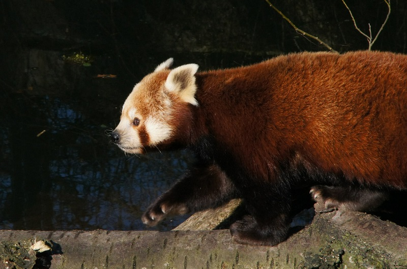
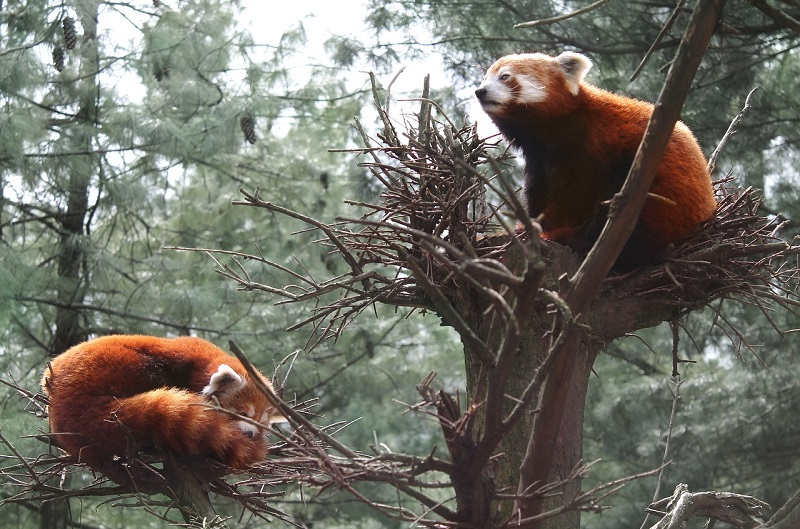
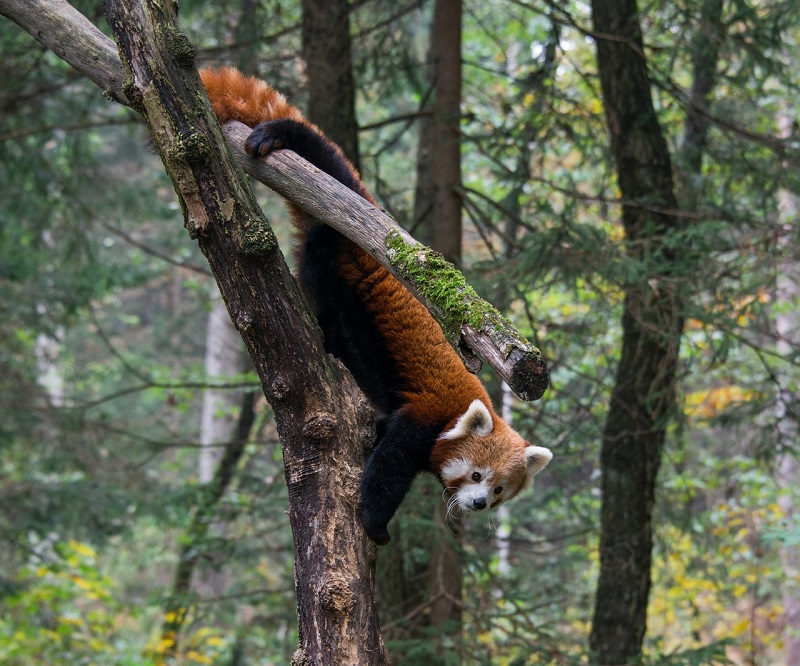
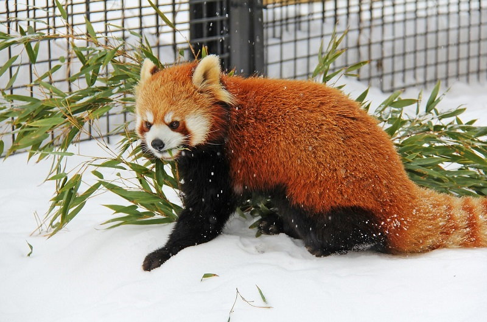

Малая панда, как многие животные, выходит на охоту по ночам. Тогда же питается бамбуком, личинками, корнями растений. В сумерках глаза «огненной лисы» видят хорошо. Это позволяет ей с легкостью передвигаться по веткам и находить укрытие от хищников — медведей и куниц.

Ночной образ жизни характерная черта айлуров. Днем животное спит. В теплое время года панда любит располагаться на ветках. Когда холодно — ищет укрытие потеплее: в дупле дерева. Обустраивает себе гнездо из веток и листьев.

Характер малой панды не агрессивный. Благодаря этому она находит общий язык с обитателями леса. Проживают парами или семействами. Самец не принимает участия в воспитании детенышей, поэтому основной груз обеспечения пищей «деток» лежит на плечах матери.

Излюбленная местность, где красная панда обитает, горная возвышенность Гималаев, на высоте 2000—4000 метров над уровнем моря. «Огненная лисица» проживает там же, где большая панда. Для хорошего питания и укрытия животным требуется обилие растительности.